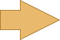
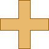
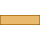

- java.lang.Object
-
- com.projetloki.genesis.image.Shapers
-
-
Method Summary
Methods Modifier and Type Method and Description static Shaperarrow(double bodyWidth, double bodyHeight)Returns a shaper that generates an arrow made of a rectangle and an isosceles rectangle pointing to the right.static Shaperballoon(double baseLeftX, double tipX, double baseRightX, int tailHeight, Shaper box)Returns a shaper that generates a speech balloon made of a box on top of a tail pointing to the bottom.static Shaperbox()Returns a shaper that generates a rectangle.static Shaperex(double barWidth)Returns a shaper that generates an X.static ShaperminusSign(double barWidth)Returns a shaper that generates a minus sign.static ShaperplusSign(double barWidth)Returns a shaper that generates a plus sign.static ShaperroundedBox(double radius)Returns a shaper that generates a rectangle with rounded corners.static ShaperroundedBox(double radius, boolean topRight, boolean bottomRight, boolean bottomLeft, boolean topLeft)Returns a shaper that generates a rectangle with rounded corners.static Shaperstar(double spokeRatio)Returns a shaper that generates a five-pointed star.static Shapertail(double baseLeftX, double tipX, double baseRightX, int tailHeight)Returns a shaper that generates a tail pointing to the bottom.static Shapervee(double baseWidth)Returns a shaper that generates a V.
-
-
-
Method Detail
-
arrow
public static Shaper arrow(double bodyWidth, double bodyHeight)
Returns a shaper that generates an arrow made of a rectangle and an isosceles rectangle pointing to the right. CallShaper.flipX(),Shaper.rotateCcw()orShaper.rotateCw()to have the arrow point to another direction. Shapers.arrow(40, 40)- Parameters:
bodyWidth- the width of the rectangle. Must be positive.bodyHeight- the height of the rectangle. Must be positive.
-
box
public static Shaper box()
Returns a shaper that generates a rectangle.
-
roundedBox
public static Shaper roundedBox(double radius)
Returns a shaper that generates a rectangle with rounded corners.
Shapers.roundedBox(20)- Parameters:
radius- for the corners. Must be positive.
-
roundedBox
public static Shaper roundedBox(double radius, boolean topRight, boolean bottomRight, boolean bottomLeft, boolean topLeft)
Returns a shaper that generates a rectangle with rounded corners. The boolean parameters let you specify which corners are to be rounded.Shapers.roundedBox(20, true, false, false, true)- Parameters:
radius- for the corners. Must be positive.topRight- whether the top-right corner is to be roundedbottomRight- whether the bottom-right corner is to be roundedbottomLeft- whether the bottom-left corner is to be roundedtopLeft- whether the top-left corner is to be rounded
-
star
public static Shaper star(double spokeRatio)
Returns a shaper that generates a five-pointed star. This shaper can only be applied to a square image.
Shapers.star(0.45)- Parameters:
spokeRatio- the spoke ratio, in [0, 1]. If == 0, the shape is empty. If == 1, the shape is a ten-pointed regular polygon. A value for a good-looking star is between 0.4 and 0.5
-
tail
public static Shaper tail(double baseLeftX, double tipX, double baseRightX, int tailHeight)
Returns a shaper that generates a tail pointing to the bottom. The result looks like a speech balloon, except that the bubble is not a closed surface but an upper half-plane. CallShaper.flipY(),Shaper.rotateCcw()orShaper.rotateCw()to have the tail point to another direction.Shapers.tail(40, 30, 60, 20)- Parameters:
baseLeftX- the x-coordinate of the left end of the tail basetipX- the x-coordinate of the tip of the tailbaseRightX- the x-coordinate of the right end of the tail base. Must be greater thanbaseLeftXtailHeight- the height of the tail. Must be positive.- See Also:
balloon(double, double, double, int, Shaper)
-
balloon
public static Shaper balloon(double baseLeftX, double tipX, double baseRightX, int tailHeight, Shaper box)
Returns a shaper that generates a speech balloon made of a box on top of a tail pointing to the bottom. CallShaper.flipY(),Shaper.rotateCcw()orShaper.rotateCw()to have the tail point to another direction.
Shapers.balloon(40, 30, 60, 20, Shapers.roundedBox(20))- Parameters:
baseLeftX- the x-coordinate of the left end of the tail basetipX- the x-coordinate of the tip of the tailbaseRightX- the x-coordinate of the right end of the tail base. Must be greater thanbaseLeftXtailHeight- the height of the tail. Must be positive.box- the shaper to generate the top box. Typically the result ofbox(),roundedBox(double)orroundedBox(double, boolean, boolean, boolean, boolean)
-
vee
public static Shaper vee(double baseWidth)
Returns a shaper that generates a V.
Shapers.vee(20)- Parameters:
baseWidth- the width of the base of each arm. Must be positive.
-
plusSign
public static Shaper plusSign(double barWidth)
Returns a shaper that generates a plus sign. Shapers.plusSign(20)- Parameters:
barWidth- the width of each bar. Must be positive.
-
minusSign
public static Shaper minusSign(double barWidth)
Returns a shaper that generates a minus sign. Shapers.minusSign(20)- Parameters:
barWidth- the width of the bar. Must be positive.
-
ex
public static Shaper ex(double barWidth)
Returns a shaper that generates an X. This shaper can only be applied to a square image.
Shapers.ex(20)- Parameters:
barWidth- the width of each bar. Must be positive.
-
-